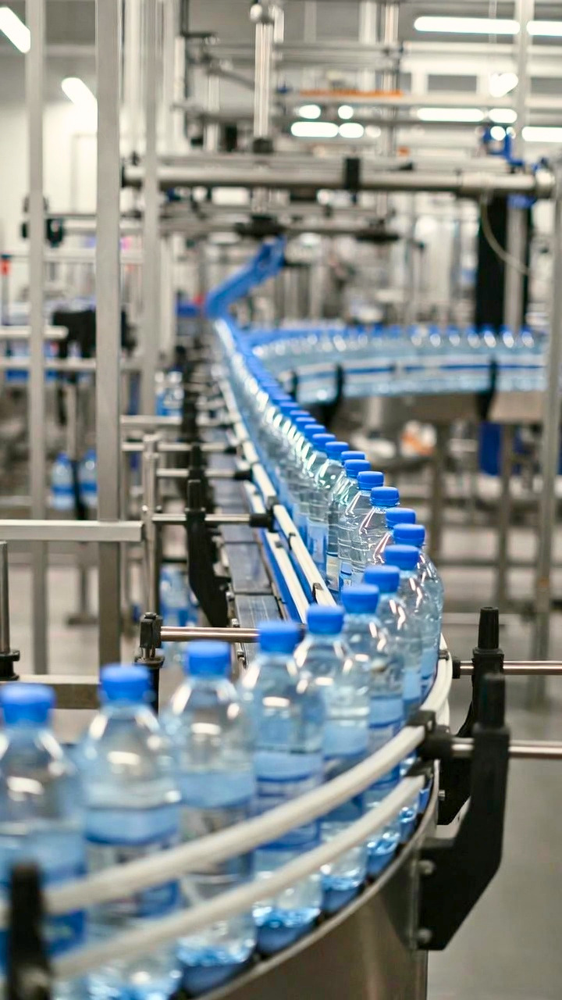
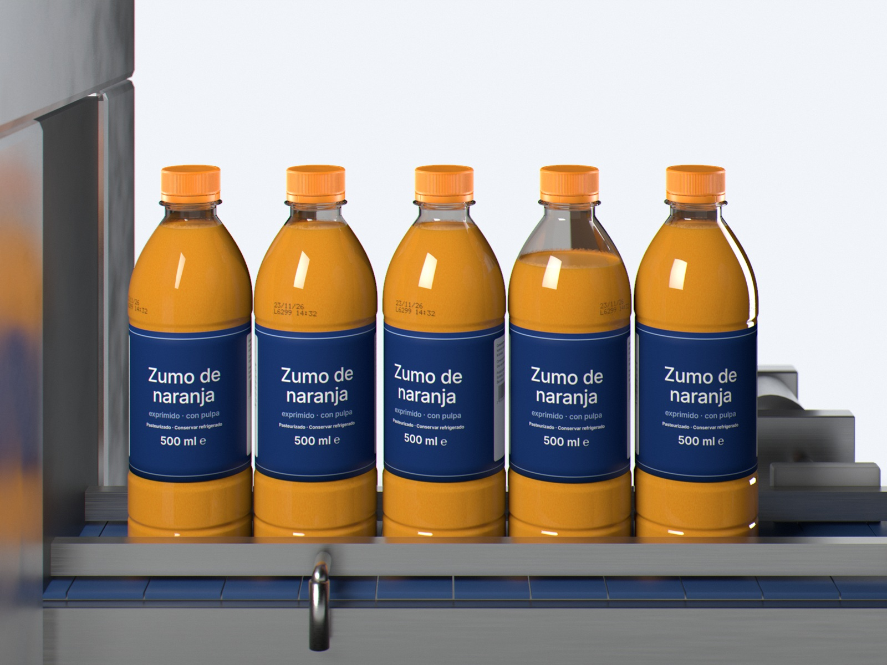
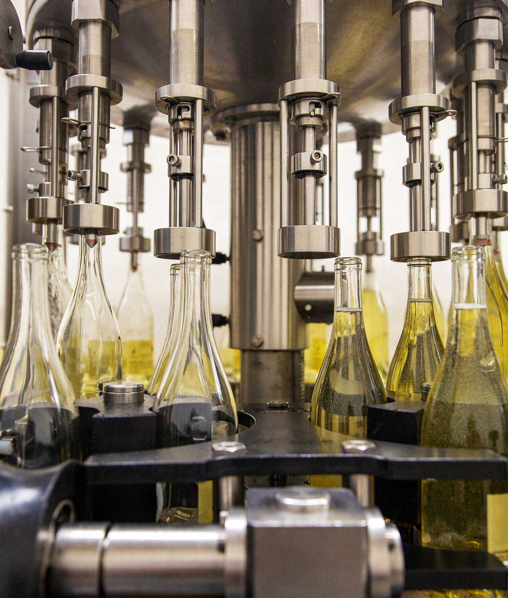
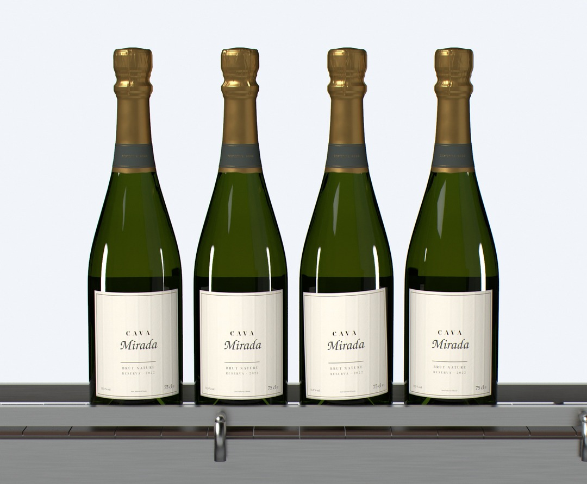
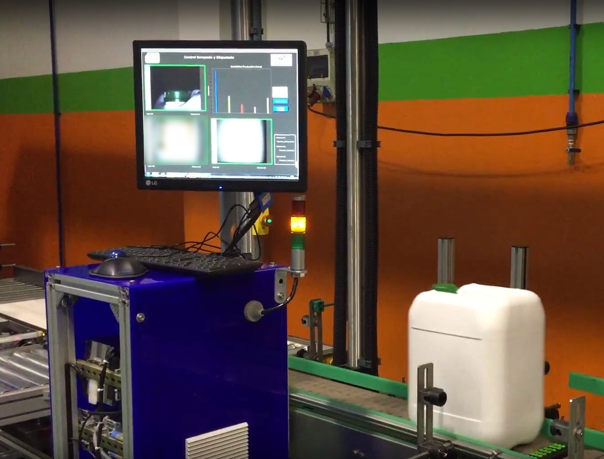

Water, juice, wine and cava
At AIS Vision Systems, we help beverage producers ensure the quality of their containers and labelling, with real-time inspection of glass and plastic bottles.

Containers
- Glass and PET bottles
- Large containers with handles
- Screw cap, tamper band and capsule
- Labels, neck labels and printed markings

Juice

Wine

Cava

Large containers